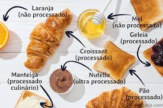
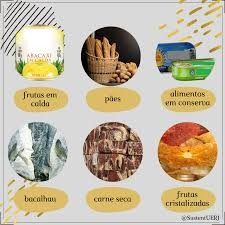

CONHECENDO OS ALIMENTOS:DO NATURAL AOS INDRUSTRIALIZADO
Os alimentos processados são alimentos que passaram por algum tipo de modificação na indústria antes de serem consumidos. Durante esse processo, são adicionados ingredientes como sal, açúcar, óleo, conservantes e outros produtos para aumentar a durabilidade ou melhorar o sabor dos alimentos. Alguns exemplos de alimentos processados são: Queijo Pão francês Milho em conserva Atum enlatado Extrato de tomate A diferença entre alimentos in natura e processados é que os alimentos in natura vêm diretamente da natureza e não passam por mudanças industriais, como frutas, verduras, ovos e leite. Já os alimentos processados sofrem alterações e recebem ingredientes adicionados pela indústria para conservar ou modificar o alimento.

